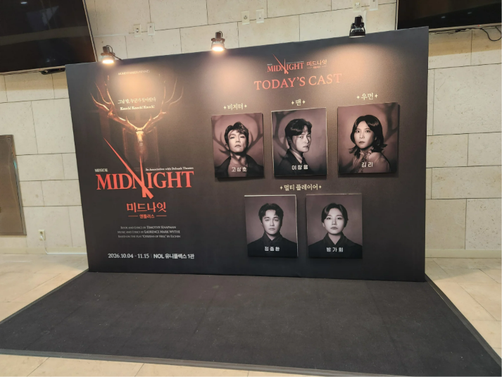

끝나고 한참 자리에서 못 일어났다
abc*****

오랜만에 고지터를 봐서 굉장히 좋았습니다. 이전 시즌에서 약간의 변화가 있었으나 앤틀러스 보다 액터뮤지션을 훨씬 더 좋아하는 나로서는 솔직히 제작사에 대해 많이 아쉬운 마음입니다. 인지도 높은 배우들로 구성된 캐스팅은 둘째치고, 공연장 크기가 너무 차이나게 비교되어 오히려 앤틀러스 무대가 심심해 보이네요.ㅠㅠ 저는 10년 전, 아직 미드나잇이 그냥 미드나잇만 존재하던 시절의 초연을 보고 이 공연의 팬이 됐어요. 오랜만에 돌아온 앤틀러스는 정말 최고였어요! 특히 배우님들 연기가, 초연부터 이어져서 그런지 공연 첫날이 아닌 것처럼 파워풀하고 단단해서 무척 좋았습니다! 한 가지 아쉬운 점은 앤틀러스의 연출에 액터뮤지션이 조금 섞인 게 보인다는 거예요. 저는 둘은 별개의 공연이라고 생각하고, 앤틀러스가 말하고자 하는 미드나잇을 더 좋아하기 때문에 둘을 섞지 않으면 좋겠어요. 앤틀러스는 대한민국이 독재자 경험/탄핵 경험이 있는 만큼 한국인의 공감을 더 자아낸다고 느끼고, 특히 고문 관련된 걸 소품으로 대체했다는 점에서 역사 반영과 실제 독재자에 대해 저항하신 분들을 배려했다는 부분이 좋았고요. 솔직히 액터뮤지션이 영국? 라이센스 원조? 라는데 영국은 자기들이 독재자였지 독재자 경험도 없어가지고, 독재자 얘기를 액자밖에서 관람하는 느낌인데 앤틀러스는 우리는 다 알지. 우리도 이 시대에서 양심 때문에 괴로움을 느껴봤어. 광화문에 한 번이라도 나간 적 있나? 이런 메시지를 줘서 좋았거든요. (특.히. 앤틀러스 초연은 탄핵이 한창일때 공연했으니 아주 감동의 극치...) 미드나잇 번역도 대박이라서 늘 가사가 입에 착붙어서 좋고요. 제 안의 미드나잇 원조는 앤틀러스라고 생각해요. 한국에 걸맞게 로컬라이징을 잘 한 거죠. 사실 요새 한국이 문화적 위상이 높아져서 해외에서 케데헌을 만드는데, 저희가 영국 뮤지컬을 한국식으로 좀 재해석 했는데 액터뮤지션이 앤틀러스보다 길고 자주해서 속상하구요.. 아무튼 앤틀러스야 말로 진정한 미드나잇이라고 생각해요. 비지터는 우리가 모두 겪어본 그 시절, 탄압의 시절에서 공포와 자책을 느낀 것이 형상화 된 거고. 우먼과 맨은 평범한 우리들이라고 생각하면 공감이 깊어요. 맨도 결국은 영웅은 아니었지만 죄책감에서 자유롭지 못했고, 우먼만 죄책감과 함께 끝나는 그런 이야기라 생각하면 감동이 몰려옵니다.
2026.10.12